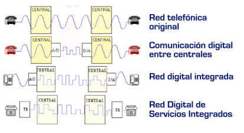
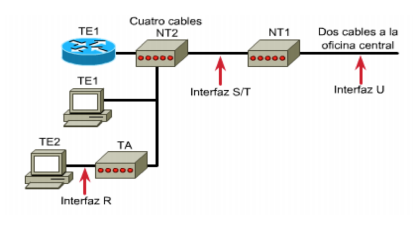
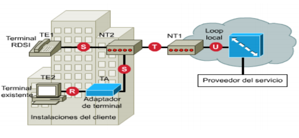
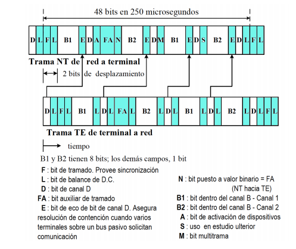
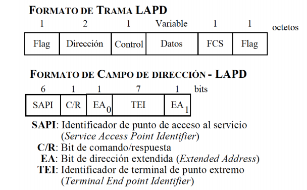

Es una red que se sigue utilizando pero cada vez menos, por ejemplo en naves de fábricas. Sin embargo es la primera red de acceso de banda ancha. Luego tiene cierta importancia histórica. 1984.
Definición de RDSI: Red que procede de la evolución de la red telefónica básica RTB. Es una red que facilita conexiones extremo a extremo, es 100 % digital para proporcional una amplia gama de servicios, tanto de voz como de otros tipos. Aunque la red es totalmente digital permite conectar tanto dispositivos analógicos como digitales, no obstante es necesaria una conversión previa de la señal analógica a digital.
RDSI = ISDN (Integrated Services Digital Network)
Las primeras normas fueron emitidas en 1984 por la CCITT.
RDSI normalizada por la ITU (International Telecom Union).
- Ventajas de RDSI:
Como la red telefónica estaba pensada para transmitir voz humana tenía sentido que la RTB fuera una red analógica. Se le denominaba antiguamente RTC, Red Telefónica Conmutada, porque estaba basada en conmutación de circuitos, pero actualmente incluye RTB (analógica) y RDSI (digital) y ambas están basadas en conmutación de circuitos.
La conmutación de circuitos telefónicos implicaba la existencia de una línea telefónica por usuario, pero con algunas líneas troncales compartidas por todos los usuarios. Si dos usuarios quieren iniciar la comunicación se establece el camino físico enlazando las líneas, liberándose cuando se finaliza la comunicación. Este método tiene un problema asociado conocido como saturación de la línea que ocurre cuando muchos usuarios quieren acceder de forma simultánea a la red.
- Evolución:
|  | |
Tanto la RTB como la RDSI se dividen en dos partes: parte externa e interna. La parte externa va desde la centralita local hasta el Punto de Terminación de Red (PTR). La parte interna es la parte que va desde el PTR hasta la roseta RJ11 (en cada domicilio). La parte interna de la red es responsabilidad del usuario, la reparación corre a su cargo en caso de falla.
Existen varios tipos de canales:
Los modos de acceso se combinan para formar diversos tipos de acceso de usuario (tipos de servicio). Dos modos:
Las agrupaciones funcionales (también llamados componentes básicos RDSI) son equipos o elementos que realizan una función conreta dentro de la red.
Los interfaces (puntos de referencia) son puntos de la red con unas características de transmisión o conmutación determinadas.
|  | |
|  | |
Describe la conexión física entre el equipo terminal TE y el equipo terminal de red NT:
Los canales B y D comparten la línea física. Necesitamos algún tipo de organización para decidir cuándo transmitimo por qué canales para evitar que se produzcan colisiones. El método empleado es el de multiplexación por división en el tiempo.
Por simplicidad nos vamos a centrar en el acceso básico. El formato de trama varía dependiendo de si va de los terminales a la red o de la red a los terminales. Las tramas BRI tienen una longitud de 48 bits, de los cuales 36 son de datos y 12 son de sobrecarga.
Pueden considerarse como dos tramas de 24 bits en sucesión. Se transmiten 4000 tramas por segundo:
4000*48 = 192 Kbps, pero como solo 36 bits son de información la velocidad efectiva es de 144 Kbps de BRI.
La trama empieza en el bit F y termina en DL. Todos los campos tienen 1 bit excepto B1 y B2.
|  | F | Inicio de la trama |
| L | Bits de balance de continua | |
| FA, N, M | Estructuras multitrama | |
| A | Bit de activacón para activar o desactivar la transmisión de un determinado terminal de usuario | |
| S | Bit de reserva, no se utiliza | |
| B1 y B2 | Datos de los canales B | |
| D | Datos del canal D | |
| E | Bits de Echo, aparecen únicamente en la trama que viaja de la red a los terminales. Llevan la misma información que los bits D de la trama a la que responden. Por tanto, si un determinado terminal comienza a recibir bits de Echo que no coincide con los bits D que él ha transmitido debe finalizar su transmisión inmediatamente. Son un mecanismo de resolución de contención para indicar qué terminal puede transmitir en un momento determinado y cuales deben finalizar la transmisión. |
|  | Flags o banderas | Son campos de 1 byte que marcan el inicio y final de la trama, formados por 01111110. |
| Dirección | 2 bytes. | |
| Control | De 1 byte, indica el tipo de trama. | |
| Datos | De longitud variable, contiene la información que viene de las capas superiores (capa 3). | |
| FCS | Secuencia de comprobación de trama, se utiliza para comprobar que esa trama se ha transmitido sin errores. | |
| EA | Bits de dirección extendida, se utilizan para saber si el siguiente bit pertenece al campo de dirección. Si EA = 0, indica que el siguiente byte pertenece al campo de dirección, EA = 1 indica que el siguiente byte ya no pertenece al campo de dirección. | |
| SAPI | Longitud de 6 bytes, Identificador de Punto de Acceso al Servicio, nos indica para qué tipo de comunicación se utiliza esa trama. Por ejemplo, SAPI = 0 indica que esa trama se utiliza para control de llamadas. | |
| CR | Bit de Comando/Respuesta Se utiliza para diferenciar si esa trama es un comando o una respuesta a una orden previa. Si la trama viaja desde la red hacia los usuarios un bit CR = 1 indica que es una respuesta, y 0 un comando. Si la trama viaja desde los usuarios a la red es justamente al contrario. | |
| TEI | De 7 bits, Identificador de Terminal de Punto extremo, se utiliza para identificar los terminales que indica desde qué terminal o hacia que terminal viaja esa trama. Si TEI = 1111111 se interpreta como la dirección broadcast. |
Es el responsable de establecer, mantener y terminar las comunicaciones para canales B y D (basados en conmutación de circuitos).
La información intercambiada entre el origen y destino va colocada en el campo Datos, de las tramas del nivel de enlace.
Tipos de mensajes:
Formato del mensaje de nivel 3:
Tema 2 |
Inicio de la página |